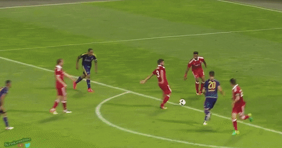
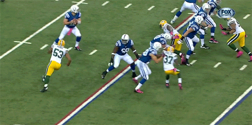

MALE
FEMALE
visit igihe.com
SPORT NEWS
 
BALL
 YOuth football is very popular in Thailand, with several competitions and clubs being active. Bangkok Youth League provides the top level of youth football in Bangkok with a membership that includes teams from Thai Premiership Academies, such as BEC Tero and Chonburi Sharks, as well as local and International Academies such as iPlay Soccer Schools. It provides a structured, competitive environment for over 1000 players aged 6–16 years. Bangkok Soccer League is a youth football club organised for children attending international schools in Thailand and provides regular football for over 500 kids, both Thai and expat.
YOuth football is very popular in Thailand, with several competitions and clubs being active. Bangkok Youth League provides the top level of youth football in Bangkok with a membership that includes teams from Thai Premiership Academies, such as BEC Tero and Chonburi Sharks, as well as local and International Academies such as iPlay Soccer Schools. It provides a structured, competitive environment for over 1000 players aged 6–16 years. Bangkok Soccer League is a youth football club organised for children attending international schools in Thailand and provides regular football for over 500 kids, both Thai and expat.